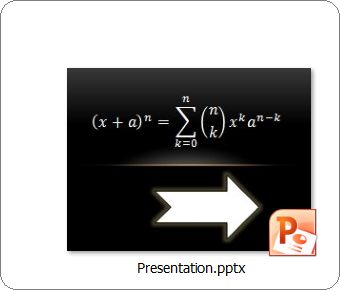
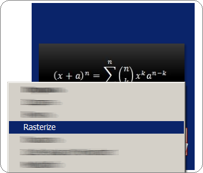
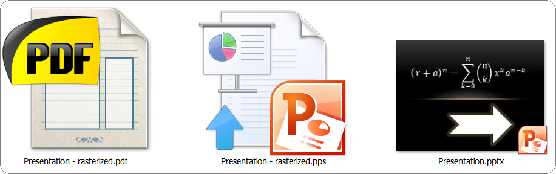

Rasterization is a process of converting some vector data into images.
Rasterization of a presentation means converting it into a slideshow consisting of images of original slides.
Why should I rasterize my presentations?
You may want your presentation to look the same everywhere instead of being distorted. You may also want your presentation not to be editable by others.
After you have rastized your presentation, you don't have to worry about all of this. Since it's roughly a set of pictures, it does not require any fonts, and the text and pictures on slides will not be distorted.
What if...
... my presentation has transistion effects between slides?
They will be preserved. Don't worry.
... my presentation contains notes?
They will be preserved as well.
... my slides contain media?
All media is copied over slide images so you'll still be able to play audio/video while presenting your rasterized slides.
... my slides contain animation?
They will become static. Don't use animation if you want to rasterize your presentation.
How to use
1. Download and run the installer
2. Locate the presentation in Windows Explorer

3. Right-click on it and select "Rasterize"

4. Check your rasterized presentation
You will get two files:
- PPS - PowerPoint slide-show with notes, media and transistion effects between slides preserved;
- PDF - file for presenting on computers with no PowerPoint but with Acrobat Reader.

The files produced are not editable. They are to be shown. After changing the source presentation, you need to rasterize it again.
Follow us on Twitter Tell your friends